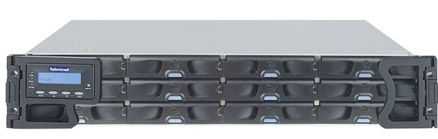
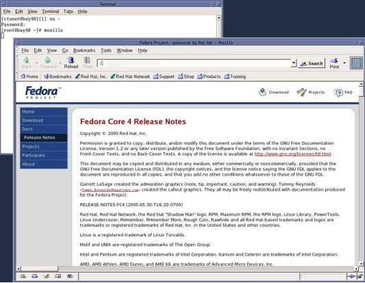
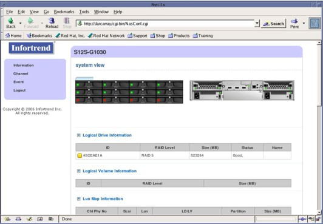
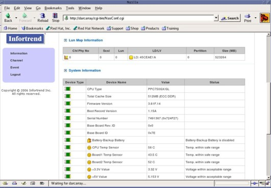
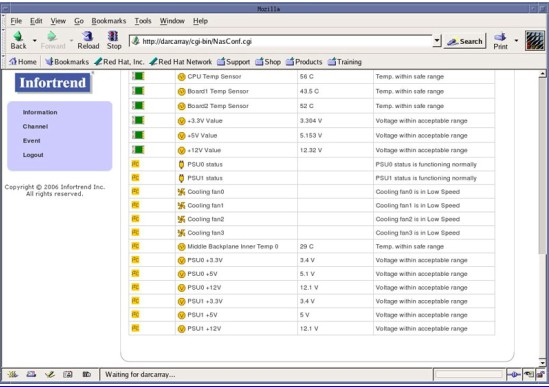

Operating Documentation
Direction 5321294, Rev# 3
GOC6 Service Methods
Operating Documentation |
| Last Revised: | 26 June 2008 |
The following information will assist in confirming if the HSDA is experiencing a hardware fault. Although the following is not a complete set of diagnostics, it should be sufficient in determining if the HSDA is suffering from hardware issues at the prescribe Field Replaceable Unit (FRU) level.
Illustration 1: High Speed Disk Array (HSDA)

| ELECTROCUTION HAZARD | |
| THOUGH THE HSDA SUPPORTS HOT SWAPPING OF HDDS, COOLING MODULES, AND PSU’S, IT IS STILL RECOMMENDED THAT ONE DISCONNECT THE AC POWER CORDS FROM THE HSDA BEFORE REMOVING THE CHASSIS. | |
| USE PROPER LOCKOUT / TAGOUT PROCEDURES BEFORE REPLACING THE COMPONENTS. |
Before proceeding with the rest of this guide, use the following checklist to find possible solutions for HSDA problems.
Is the HSDA powered on?
Is the HSDA connected to the proper electrical outlet on the Power Distribution Box?
Has Circuit Breaker #1 or #2 (CB1 or CB2) tripped on Power Distribution Box?
Are the AC Power Cords fully seated in the PSU Modules?
Are the rear panel PSU Power LEDs illuminated Green?
| NOTE: | The HSDA has two (2) redundant PSU Modules. The HSDA will continue to work with only one functioning PSU. A failed PSU Module should be replaced as soon as possible to prevent a complete failure of the HSDA in the event the second PSU Module should malfunction. |
Examine all cables for loose or incorrect connections.
Network Cable
SAS Controller Cable
The HSDA is equipped with Remote Management Module (RMM) functionality via the RAID Controller Module and its dedicated Ethernet network access. By utilizing RMM functionality in the HSDA, an independent path for communication and hardware status checking can be established without the need of a fully functioning HSDA.
The RMM functionality of the RAID Controller Module in the HSDA provides the means for virtual presence (remote console) at the Host Computer. This presence includes keyboard, video and mouse redirection. As long as the standby power of the HSDA power supply is present, the RAID Controller Module will operate and allow access from the Host Computer.
This RMM functionality replaces the Serial over LAN (SOL) functionality used in previous console generations.
| CAUTION MUST BE OBSERVED WHEN WORKING WITH THE RMM. SETTINGS AND OPTIONS SHALL NOT BE ALTERED. ONLY ACCESS THOSE FEATURES DESCRIBE BELOW. ONLY TRAINED INDIVIDUALS SHOULD ACCESS THE RMM | |
To access the RMM, open a Terminal Window, and log on as root:
Type: {ctuser@hostname}su – and press [ENTER]
Type the root password and press [ENTER]
Launch the Mozilla WEB Brower:
Type: [root@hostname]mozilla and press [ENTER]
The Mozilla (Fedora) WEB Browser ( Step ) will appear.
Illustration 2: Mozilla WEB Browser

In the WEB Browser URL Address Bar:
Type: darcarray and press [ENTER]
| NOTE: | Type: darcarray2 for second HSDA (for HD Only). |
The WEB Browser will update and display the Login page ( Illustration 3) for the HSDA RMM.
Username: Type: Information and press [TAB]
Password Type: ( blank ) and press [ENTER]
Illustration 3: HSDA RMM Login Page

The WEB Browser will update and display the HSDA RMM Home / Information Page ( Illustration 4) for the HSDA RMM.
Illustration 4: HSDA RMM Home / Information Page

At the HSDA Home page (defaults to Information page), or by clicking on [Information] , a visual display of hardware status will be shown in real time ( Illustration 4). This allows the user to view the following:
HSDA Individual HDD Status - Green (OK) Red (HDD Failure or Not Present)
HSDA Raid Controller Module Status - Green (OK) Red (Failed or Off Line)
HSDA PSU Module Status - Green (OK) Red (Failed)
HSDA Cooling Module Status - Green (OK) Red (Failed)
In addition, key hardware information will be listed including:
Controller Module and Firmware Revisions
Temperature Sensors
Power Supply Voltages
Fan Status
Illustration 5: HSDA RMM Information Page 1

Illustration 6: HSDA RMM Information Page 2

By clicking [Event] , the HSDA Event Log ( Illustration 7) can be viewed.
Illustration 7: HSDA RMM Event Page

The HSDA has numerous status LEDs mounted on the chassis that can indicate hardware faults and operational status of the array. These LEDs are visible on either the front or back of the HSDA.
Illustration 8: Front Keypad/LCD Panel Indicators

Table 1: Front Keypad/LCD Panel Indicators
| Name | Color | Status | |
|---|---|---|---|
| PWR | Blue | ON | Indicates that power is supplied to subsystem. |
| (Power) | OFF | Indicates that no power is supplied to the subsystem or the subsystem/RAID controller has failed. | |
| BUSY | White | FLASHING | Indicates that there is active traffic on Host/Drive channels. |
| OFF | Indicates that there is no activity on the Host/Drive channels. | ||
| ATTEN | Red | ON | Indicates that a component failure/status event has occurred. |
| (Attention) | OFF | Indicates that the subsystem and all its components are operating correctly. |
| NOTE: | During Power On process, the ATTEN LED will light up steadily. Once the HSDA successfully boots up with no faults, the ATTEN LED is turned off. |
Illustration 9: HDD Tray Indicators

LED indicators are located on the right side of each of the HDD trays. When notified by a drive failure message, one should check the drive tray indicators to find the correct location of the failed drive. Replacing the incorrect drive can fatally fail a logical drive array.
Table 2: HDD Tray Indicators
| Name | Color | Status | |
|---|---|---|---|
| Drive Busy | Blue/Purple | FLASHING | Flashing BLUE indicates the RAID controller is accessing the disk drive. The drive is busy. |
| Flashing PURPLE indicates the drive is in a spin-up state. The drive is not ready | |||
| OFF | Indicates that there is not activity on the drive. | ||
| Power Status | Green / Red | GREEN | Indicates that a drive is installed in the drive tray. |
| RED | Indicates that a drive has failed or is missing. |
Illustration 10: HSDA Controller Module Indicators

Table 3: SAS Port Indicators
| Name | Color | Status |
|---|---|---|
| SAS Link Status | Green | Steady Green indicates that all PHYs are validly linked to SAS Controller in DIG Computer. |
| Blinking indicates one of the PHY links has failed. | ||
| OFF Indicates that all PHYs are off line. |
| NOTE: | “PHY” is a term used with Serial Attached SCSI (SAS) interfaces to describe the lower physical layers of the SAS Protocol. |
Table 4: Controller Status Indicators
| LED | Name | Color | Status |
|---|---|---|---|
| 1 | Ctrl Status | Green / Amber | Green Indicates that the controller is active and operating normally. |
| Amber Indicates the controller is being initialized or has failed. The controller is not ready. | |||
| 2 | C_Dirty | Amber | ON Indicates that data is currently cached in memory or is supported by the BBU during a power loss. |
| 3 | Temp. | Amber | ON Indicates that one of the preset temperature thresholds is violated. |
| 4 * | BBU Link | Green | ON Indicates that the BBU is present. |
| 5 | Hst Busy | Green | FLASHING Indicates there is active traffic through the Host Port. (SAS Controller in DIG) |
| OFF Indicates there is no activity on the Host Port. | |||
| 6 | Drv Busy | Green | FLASHING Indicates there is active traffic on the drive channels. |
| OFF Indicates there is no activity on the drive channels. |
| NOTE: | * The Battery Backup Unit (BBU) is not utilized in the HSDA. |
Table 5: NIC Port Indicators
| Name | Color | Status |
|---|---|---|
| Link Status | Green | ON Indicates the management port is connected to a node (Console Network Switch - CNS). |
| LAN Activity | Green | Blinking indicates active transmission. |
Restore Default LED
A Restore Default LED is located above the Restore Default push button on the lower right corner of the HSDA Controller Module. To restore firmware defaults, press and hold the button down before turning on the HSDA. Once the factory defaults are successfully restored, release the button after the Restore Default LED lights green.
Illustration 11: HSDA PSU Module Indicators

Table 6: PSU Indicators
| Color | Status |
|---|---|
| Intermittent Flashing Green | The power supply has not been turned on. The PSU LED flashes when the HSDA is connected to a power source but not yet turned on. |
| Steady Green | The power supply is operating normally |
| Steady Red | The power supply has failed and is unable to provide power to the HSDA. |
Illustration 12: HSDA Cooling Module Indicators

Table 7: Cooling Module Indicators
| Color | Status |
| Steady Green | Cooling Fan is functioning |
| Steady Red | The Cooling Fan has failed |
| NOTE: | When temperature sensors detect an elevated temperature reading or the failure of any cooling fan, firmware in the HSDA will instruct the remaining cooling fans to operate at a high speed. Once the temperature falls back within the safe range or the fault condition is corrected, cooling fans will resume the low speed. |